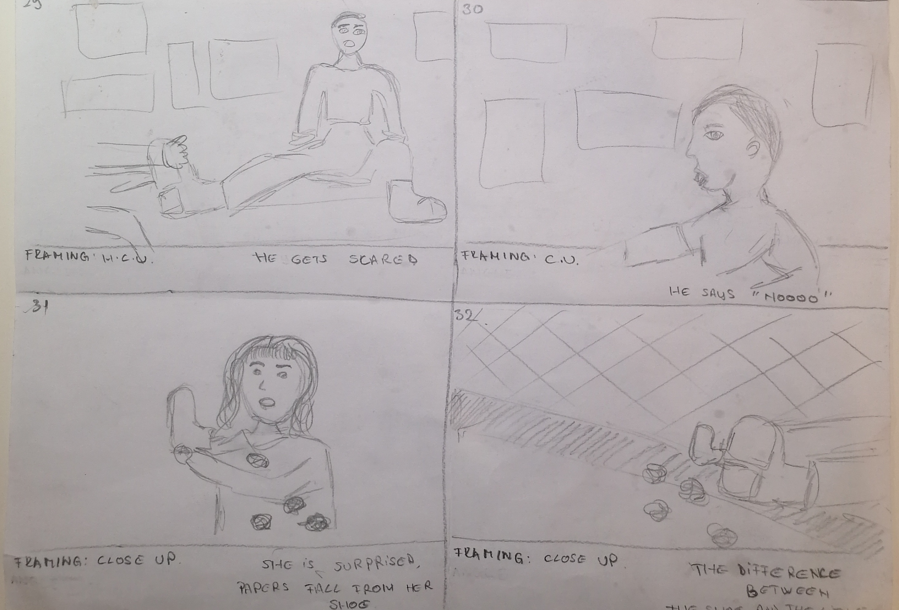

For the final project of the semester, I teamed up with four people to develop and produce three videos about sex education for our client – Cherry Pop. My team decided to focus on creating three different lengths promotional videos for Facebook, Twitter and Instagram addressing misleading sex myths going around on the internet through the prism of humour.
Acquired competences
I experienced a structured project’s execution from the beginning with a research to the end with pitching the product to the client. I improved my researching and data driven decision making throughout the whole video development process skills. Improved finding synergy between group members, leading and setting a structure to a teamwork. I learnt basic video language, filming techniques and terminology. Set a basic understanding of media laws and neuromarketing through social media.
Workflow
The workflow consisted of a thorough research which helped to set a more professional ideation process for the video. After deciding on a video idea, we wrote treatment, script and drew story board to have a smooth video production process. After filming the video, the post-production stage followed throughout which not only did we edit the videos but also created a pretotype webpage and prepared a pitch to a client.
ResearchPersonaIdeationPrototype
Research and persona development
The concept development began with refining key points of a thorough research that was collected about the client, client’s goals, target audience, problem, competitors, social media videos analysis and persona creation. It helped to keep the video creation process sharp, relevant to the audience.
Treatment
After having brainstorming sessions about meaningful video concept, with a focus on problems within sex education, we came up with an idea of addressing crazy sex myths going around on the internet that young people who do not get a proper sex education might believe. We decided to talk about the issue from a comedic perspective. We wrote a treatment and a script for a video in which we see a group of high school girls sharing sex “facts” and one of them being the infamous “shoe myth” meanwhile one of the girls develops a crush on a classmate based on this myth. However, the outcome is different than she could have thought.
Storyboard
The final pre-production step was drawing a storyboard to have a precise plan for the video production. The storyboard defined all the shooting details such as shot size, angle, camera movement, lighting, sound, dialog assigned to particular shots and needed props.

Social media strategy
We formatted our video based on social media platforms that were the most suitable for promoting Chery Pop to our primary audience: teachers and parents. The platforms were Facebook and Twitter, however, our videos are also suitable for Instagram’s IG TV.
Pitching to the client
The last stage of the 3-video-project was pitching to the client where we presented our solution based on the research, the message behind the video, social media strategy using the Pecha Kucha presentation method which helped to keep a presentation sharp, precise, professional and interesting.